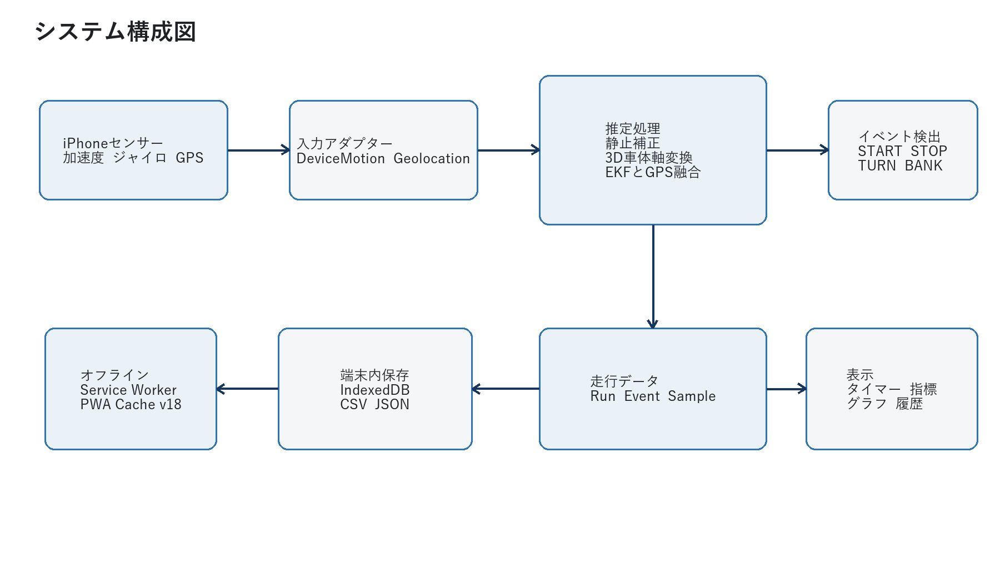
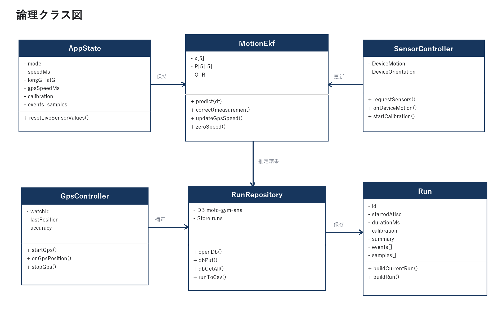
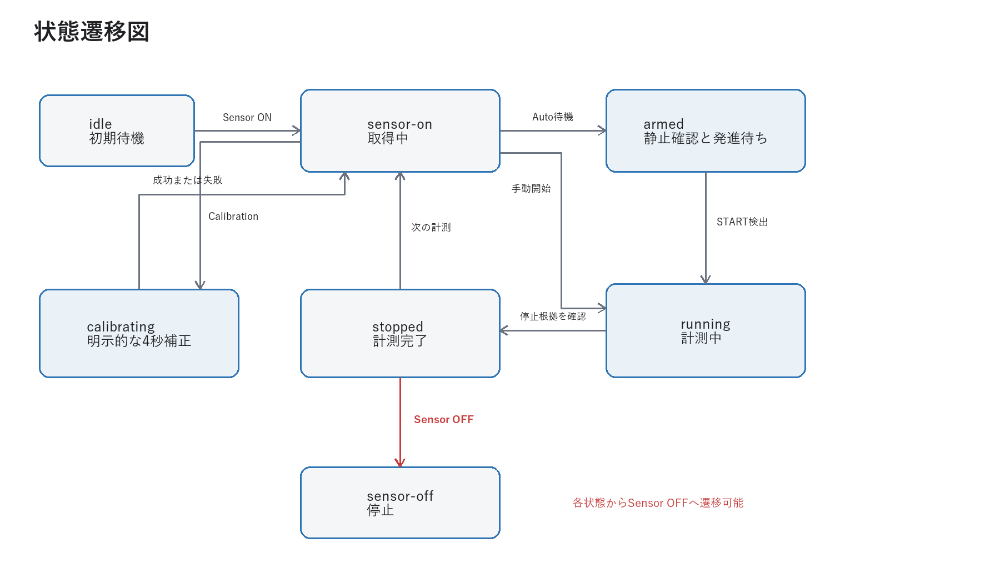

全体構造

ソース構造
| ファイル | 責務 |
|---|---|
app.js | センサー取得、較正、EKF、自動計測、保存、出力、画面状態 |
index.html / styles.css | 計測操作、preflight、ライブ値、履歴画面 |
sw.js / manifest.webmanifest | ホーム画面導入とオフラインcache |
tests/ | モデル単体、決定論、乱数耐性、STOP、耐久、実走回帰 |
scripts/release_gate.mjs | 製品判定を集約しJSON/Markdown証跡を生成 |
中心となる状態
x = [speed_mps, longitudinal_g, lateral_g, yaw_rate_dps, bank_deg]
mode = idle | sensor-on | calibrating | armed | running | stopped
measurementMode = none | auto | manual
物理・観測・誤差モデル
予測
加速度計は空気抵抗などを含む実際の正味加速度を観測するため、別の人工dragは加えません。G、yawは減衰random walk、bankはgyroのroll rateで時間更新します。
IMU観測
innovationを6σで制限し、衝撃や一時的なセンサースパイクが状態全体を壊さないようにします。共分散はJoseph形式で更新し、対称性と正の対角を維持します。
GPS観測
GPSはIMUより低速・遅延して届くため、速度だけを別のscalar updateで補正します。異常な差は8σまたは3 m/sの大きい方で制限します。
取付角度と振動
4秒較正で重力方向と3軸gyro biasを推定し、最初の明確な発進ベクトルを水平面へ射影して車体前方を決めます。加速度の低域通過時定数は0.08秒で、除去された高周波成分を振動量として別に記録します。
自動計測

| 段階 | 主条件 | 狙い |
|---|---|---|
| 準備 | センサー、較正、保存、GPS静止を確認 | 走行中や未較正での誤START防止 |
| START | 前向きGを100 ms、緩発進は350 ms継続 | 反応性と振動耐性の両立 |
| STOP strict | GPS 0.15 m/s以下を900 ms、位置移動1.5 m以下 | 通常の停止を約1〜2秒で確定 |
| STOP dwell | 平均0.4 m/s以下を2.2秒、移動0.75 m以下 | 低頻度・揺れるGPSのfallback |
| IMU fallback | GPSなし、直前減速、推定速度0.35 m/s以下、950 ms | GPS欠測時だけ慎重に停止 |
ログと保存
走行ログと診断ログは構築済みです。各走行はIndexedDBへ保存され、15秒checkpoint、発進前5秒、STOP後5秒、GAP/SYNC、外れ値gate、品質理由まで追跡できます。
run
├─ id, startedAtIso, endedAtIso, durationMs
├─ appVersion, schemaVersion
├─ calibration { gravityVector, forwardVector, gyroBias, bikeProfile, quality }
├─ diagnostics { preflight, startDecisionLatencyMs, postStopCaptureStatus }
├─ quality { status, score, reasons, metrics }
├─ events[]
└─ samples[]未構築なのは遠隔クラッシュ監視と集中サーバーログです。現在はプライバシーと屋外オフライン動作を優先し、位置・rawセンサーを外部送信しません。
現在の品質ゲート
自動試験合格だけでは製品リリース可になりません。iOSバックグラウンド停止、実GPSマルチパス、車種・取付部の共振は閉鎖コース実機試験で確認します。
CI/CD
.github/workflows/ci.ymlがpush/PRごとに回帰試験と製品ゲートを実行します。pages.ymlはmainのゲート合格後だけPWAをGitHub Pagesへ配信します。
git push / pull request
↓
pnpm install --frozen-lockfile
↓
pnpm test → pnpm run test:product
↓ pass
release evidence artifact / GitHub Pages deploy詳細は CI/CD・ログ設計 と コード設計 を参照してください。